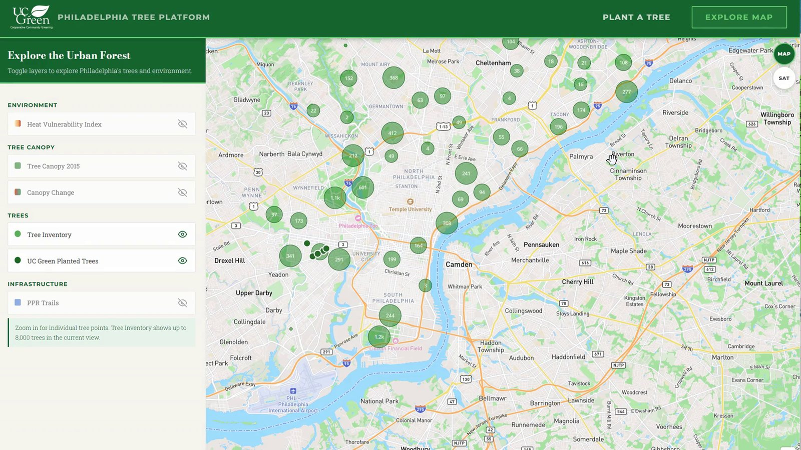

Decision tool
Tree Planting Decision System
A planning and request interface for Philadelphia's street trees. Planners explore heat exposure, canopy change and the existing tree inventory on one map, and residents can submit a planting request for a specific site.
Python · SQL · Tableau · JavaScript
Open the tool →